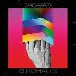
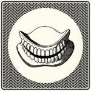

Music Reviews
-

Pinkshinyultrablast Everything Else Matters
It might have taken them over seven years to get to this point, but the debut album from Russian shoegazers Pinkshinyultrablast was well worth the wait.
Joe Rivers reviews... -

California X Nights in the Dark
On the follow up to their self-titled debut, the Amherst, Massachusetts foursome keep their dual heroic riffs and sludgy, mid-tempo vamps rooted in place.
Juan Edgardo Rodríguez reviews... -

Panda Bear Meets the Grim Reaper
Animal Collective member Noah Lennox returns with another outing under the Panda bear moniker, channeling his wildly cerebral introversions while further highlighting the nagging indulgences of his past work.
Juan Edgardo Rodríguez doesn't fear the reaper... -

Diagrams Chromatics
Since his debut album, Sam Genders of Diagrams has upped sticks to Sheffield and now records in his own home studio. Will this prove to be a positive influence on album two, Chromatics?
Joe Rivers reviews... -
Charli XCX Sucker
Charlotte Aitchison has a couple things running through her mind, but it's nothing that can't be expressed through a collection of 13 top rate pop-punk gems.
Luiza Lodder boom-claps to the sound of Sucker... -
TV On The Radio Seeds
For their fifth album and the first since the death of bassist Gerard Smith, TV On The Radio has created a joyous affair that reflects on the members' long-lasting friendship and the ecstasy of being alive.
Joe Marvilli watches TV On The Radio shift their position into the light... -

Foo Fighters Sonic Highways
The 8th Foo Fighters LP is an intriguing prospect, with each track being recorded in a different US city of musical notoriety. Such an educational excursion has however resulted instead in a celebration American rock music from coast to coast, instead of a Foos album with any identity of its own.
Carl Purvis could do with a road map... -

Ariel Pink pom pom
Everyone's favorite nympho drops the Haunted Graffiti name for his latest, a double album in which he rightfully takes full artistic credit and responsibility for every single detail that defines his warped sense of propriety.
Juan Edgardo Rodríguez reviews... -

Hookworms The Hum
The Leeds/Halifax five-piece's latest foray into psychedelia is a measured, workmanlike effort that offers few surprises.
Juan Edgardo Rodríguez reviews... -

Jessie Ware Tough Love
Jessie Ware is the latest in a series of British artists to leave her mark on soulful pop. Does she succeed with her sophomore effort Tough Love?
Luiza Lodder reviews...